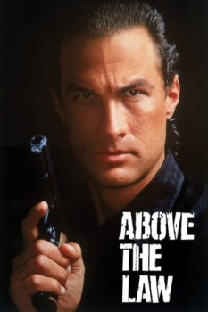
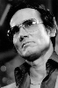

Country:United States, 99 minutes
Spoken languages:English, Spanish
Genres:Action, Thriller
Director(s):Andrew Davis
Writer(s):Ronald Shusett, Andrew Davis, Steven Pressfield
Video Codec:Unknown
Number: 311


Certification:R
Storyline:
Nico Toscani is an Italian immigrant, American patriot, ex-CIA agent, aikido specialist and unorthodox Chicago policeman. He is as committed to his job as he is to his personalized brand of justice—expert and thorough bone-crushing.
Cast: 

Medium: Original DVD,
Loaned: No
Aspect ratio: Unknown